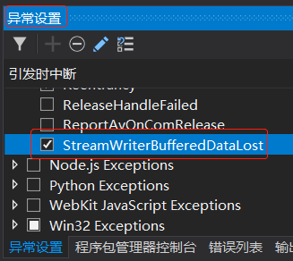

托管堆和垃圾回收
作者：追风剑情 发布于：2021-1-7 17:34 分类：C#
每个程序都要使用这样或那样的资源，包括文件、内存缓冲区、屏幕空间、网络连接、数据库资源等。事实上，在面向对象的环境中，每个类型都代表可供程序使用的一种资源。要使用这些资源，必须为代表资源的类型分配内存。以下是访问一个资源所需的步骤。
1.调用 IL 指令 newobj，为代表资源的类型分配内存(一般使用 C# new 操作符来完成)。
2.初始化内存，设置资源的初始状态并使资源可用。类型的实例构造器负责设置初始状态。
3.访问类型的成员来使用资源(有必要可以重复)。
4.摧毁资源的状态以进行清理。
5.释放内存。垃圾回收器独自负责这一步。
如果需要程序员手动管理内存(例如，原生 C++开发人员就是这样的)，这个看似简单的模式就会成为导致大量编程错误的“元凶”之一。想想看，有多少次程序员忘记释放不再需要的内存而造成内存泄漏？又有多少次试图使用已经释放的内存，然后由于内存被破坏而造成程序错误和安全漏洞？而且，这两种 bug 比其他大多数 bug 都要严重，因为一般无法预测它们的后果或发生的时间。如果是其他 bug，一旦发现程序行为异常，改正出问题的代码行就可以了。
例如，访问越界的 bug 可能取回不相干的数据，使程序结果变得不正确。而且错误没有规律，让人捉摸不定。——译注
现在，只要写的是可验证的、类型安全的代码(不要用c# unsafe关键字)，应用程序就不可能会出现内存被破坏的情况。内存仍有可能泄漏，但不像以前那样是默认行为。现在内存泄漏一般是因为在集合中存储了对象，但不需要对象的时候一直不去删除
为了进一步简化编程，开发人员经常使用的大多数类型都不需要步骤4(摧毁资源的状态以进行清理)。所以，托管堆除了能避免前面提到的 bug，还能为开发人员提供一个简化的编程模型：分配并初始化资源并直接使用。大多数类型都无需资源清理，垃圾回收器会自动释放内存。
使用需要特殊清理的类型时，编程模型还是像刚才描述的那样简单。只是有时需要尽快清理资源，而不是非要等着GC介入。可在这些类中调用一个额外的方法(称为Dispose)，按照自己的节奏清理资源。另一方面，实现这样的类需要考虑到较多的问题。一般只有包装了本机资源(文件、套接字和数据库连接等)的类型才需要特殊清理。
1、从托管堆分配资源
CLR 要求所有对象都从托管堆分配。进程初始化时，CLR 划出一个地址空间区域作为托管堆。CLR 还要维护一个指针，我把它称作 NextObjPtr。该指针指向下一个对象在堆中的分配位置。刚开始的时候，NextObjPtr 设为地址空间区域的基地址。
一个区域被非垃圾对象填满后，CLR 会分配更多的区域。这个过程一直重复，直至整个进程地址空间都被填满。所以,你的应用程序的内存受进程的虚拟地址空间的限制。32 位进程最多能分配 1.5 GB，64 位进程最多能分配 8 TB。
C#的 new 操作符导致 CLR 执行以下步骤。
1.计算类型的字段(以及从基类型继承的字段)所需的字节数。
2.加上对象的开销所需的字节数。每个对象都有两个开销字段：类型对象指针和同步块索引。对于 32 位应用程序，这两个字段各自需要 32 位，所以每个对象要增加 8 字节。对于 64 位应用程序，这两个字段各自需要 64 位，所以每个对象要增加16 字节。
3. CLR 检查区域中是否有分配对象所需的字节数。如果托管堆有足够的可用空间，就在NextObjPtr指针指向的地址处放入对象，为对象分配的字节会被清零。接着调用类型的构造器(为 this 参数传递 NextObjPr)，new操作符返回对象引用。就在返回这个引用之前，NextobjPr指针的值会加上对象占用的字节数来得到一个新值，即下个对象放入托管堆时的地址。
对于托管堆，分配对象只需在指针上加一个值——速度相当快。在许多应用程序中，差不多同时分配的对象彼此间有较强的联系，而且经常差不多在同一时间访问。例如，经常在分配一个 BinaryWriter 对象之前分配一个 FileStream 对象。然后，应用程序使用BinaryWriter 对象，而后者在内部使用 FileStream 对象。由于托管堆在内存中连续分配这些对象，所以会因为引用的“局部化”(locality)而获得性能上的提升。具体地说，这意味着进程的工作集会非常小，应用程序只需使用很少的内存，从而提高了速度。还意味着代码使用的对象可以全部驻留在 CPU 的缓存中。结果是应用程序能以惊人的速度访问这些对象，因为 CPU 在执行大多数操作时，不会因为“缓存未命中”(cache miss)而被迫访问较慢 的RAM。
根据前面的描述，似乎托管堆的性能天下无敌。但先别激动，刚才说的有一个大前提——内存无限,CLR 总是能分配新对象。但内存不可能无限,所以CLR 通过称为“垃圾回收”(GC)的技术“删除”堆中你的应用程序不再需要的对象。
2、垃圾回收算法
应用程序调用new操作符创建对象时，可能没有足够地址空间来分配该对象。发现空间不够，CLR就执行垃圾回收。
至于对象生存期的管理，有的系统采用的是某种引用计数算法。事实上，Microsoft自己的“组件对象模型”(Component Object Model,COM)用的就是引用计数。在这种系统中，堆上的每个对象都维护着一个内存字段来统计程序中多少“部分”正在使用对象。随着每一 “部分”到达代码中某个不再需要对象的地方，就递减对象的计数字段。计数字段变成0对象就可以从内存中删除了。许多引用计数系统最大的问题是处理不好循环引用。例如在GUI应用程序中，窗口将容纳对子UI元素的引用，而子UI元素将容纳对父窗口的引用。这种引用会阻让两个对象的计数器达到0，所以两个对象水远不会删除，即使应用程序本身不再需要窗口了。
鉴于引用计数垃圾回收器算法存在的问题，CLR改为使用一种引用跟踪算法。引用跟踪算法只关心引用类型的变量，因为只有这种变量才能引用堆上的对象；值类型变最直接包含值类型实例。引用类型变量可在许多场合使用，包括类的静态和实例字段，或者方法的参数和局部变量。我们将所有引用类型的变量都称为根。
ClR开始GC时，首先暂停进程中的所有线程。这样可以防止线程在CLR检查期间访问对象并更改其状态。然后，CLR进入 GC 的标记阶段。在这个阶段，CLR遍历堆中的所有对象，将同步块索引字段中的一位设为 0。这表明所有对象都应删除。然后，CLR 检查所有活动根，查看它们引用了哪些对象。这正是 CLR 的 GC 称为引用跟踪 GC的原因。如果一个根包含 null，CLR 忽略这个根并继续检查下个根。
任何极如果引用了堆上的对象，CLR都会标记那个对象，也就是将该对象的同步块索引中的位设为 1。一个对象被标记后，CLR 会检查那个对象中的根，标记它们引用的对象。如果发现对象已经标记，就不重新检查对象的字段。这就避免了因为循环引用而产生死循环。
下图展示了一个堆，其中包含几个对象。应用程序的根直接引用对象 A，C，D和F所有对象都已标记。标记对象 D 时,垃圾回收器发现这个对象含有一个引用对象H的字段，造成对象 H 也被标记。标记过程会持续，直至应用程序的所有根所有检查完毕。
检查完毕后，堆中的对象要么已标记，要么未标记。已标记的对象不能被垃圾回收，因为至少有一个根在引用它。我们说这种对象是可达(reachable)的，因为应用程序代码可通过仍在引用它的变量抵达(或访向)它。未标记的对象是不可达(unreachable)的，因为应用程字中不存在使对象能被再次访问的根。
CLR 知道哪些对象可以幸存，哪些可以删除后，就进入 GC 的压缩(compact,理解成碎片整理)阶段。在这个阶段，CLR对堆中已标记的对象进行“乾坤大挪移”，压缩所有幸存下来的对象，使它们占用连续的内存空间。这样做有许多好处。首先，所有幸存对象在内存中紧挨在一起。恢复了引用的“局部化”，减小了应用程序的工作集，从而提升了将来访问这些对家时的性能。其实，可用空间也全部是连续的，所以这个地址空间区段得到了解放，允许其他东西进驻。最后，压缩意味着托管堆解决了本机(原生)堆的空间碎片化问题。
在内存中移动了对象之后有一个问题亟待解决。引用幸存对象的根现在引用的还是对象最初在内存中的位置，而非移动之后的位置。被暂停的线程恢复执行时，将访问旧的内存位置，会造成内存损坏。这显然不能容忍的，所以作为压缩阶段的一部分，CLR 还要从每个根减去所引用的对象在内存中偏移的字节数。这样就能保证每个根还是引用和之前一样的对象；只是对象在内存中变换了位置。
压缩好内存后，托管堆的 NextObjPtr指针指向最后一个幸存对象之后的位置。下一个分配的对象将放到这个位置。下图展示了压缩阶段之后的托管堆。压缩阶段完成后，CLR恢复应用程序的所有线程。这些线程继续访问对象，就好象GC没有发过一样。
如果CLR在一次GC之后回收不了内存，而且进程中没有空间来分配新的GC区域，就说明该进程的内存已耗尽。此时，试图分配更多内存的new操作符会抛出OutOfMemoryException。应用程序可捕捉该异常并从中恢复。但大多数应用程序都不会这么做；相反，异常会成为未处理异常，Windows将终止进程并回收进程使用的全部内存。
进程的内存耗尽，new操作符会抛出OutOfMemoryException
作为程序员，应注意本章开头描述的两个 bug 不复存在了。首先，内存不可能泄漏，因为从应用程序的根访问不了任何对象，都会在某个时间被垃圾回收。其次，不可能因为访问被解放的内存而造成内存损坏，因为现在只能引用活动对象；非活动的对象是引用不了的。
① 大对象堆中的对象不会压缩，所以大对象堆还是可能发生地址空间碎片化的。
② 所有引用类型的变量都是“根”。
3、垃圾回收和调试
一旦根离开作用域，它引用的对象就会变得“不可达”，GC会回收其内存。不保证对象在方法的生存期中自始至终地存活。这会对应用程序产生有趣的影响。例如以下代码：
using System;
using System.Threading;
public static class Program {
public static void Main() {
//创建每2000毫秒就调用一次TimerCallback方法的Timer对象
Timer t = new Timer(TimerCallback, null, 0, 2000);
//等待用户按Enter键
Console.ReadLine();
}
private static void TimerCallback(Object e) {
//当调用该方法时，显示日期和时间
Console.WriteLine("In TimerCallback: " + DataTime.Now);
//出于演示目的，强制执行一次垃圾回收
GC.Collect();
}
}
在命令行上，不用任何特殊编译器开关编译代码。运行可执行文件，会发现TimerCallback方法只被调用了一次！
观察代码，可能以为TimerCallback方法每隔2000毫秒调用一次。毕竟，代码创建了一个Timer对象，而且有一个变量t引用该对象。只要计时器对象存在，计时器就应该一直触发。但要注意，TimerCallback方法调用GC.Collect()强制执行了一次垃圾回收。
回收开始时，垃圾回收器首先假定堆中的所有对象都是不可达的(垃圾);这自然也包括Timer 对象。然后，垃圾回收器检查应用程序的根，发现在初始化之后，Main 方法再也没有用过变量 t。既然应用程序没有任何变量引用 Timer 对象，垃圾回收自然会回收分配给它的内存；这使计时器停止触发，并解释了为什么 TimerCalback 方法只被调用了一次。
现在，假定用调试器单步调试 Main，而且在将新 Timer 对象的地址赋给t之后，立即发生了一次垃圾回收。然后，用调试器的“监视”窗口查看t引用的对象，会发生什么事情呢？因为对象已被回收，所以调试器无法显示该对象。大多数开发人员都没有料到这个结果，认为不合常理。所以，Microsoft提出了一个解决方案。
使用C#编译器的/debug开关编译程序集时，编译器会应用System.DiagnosticsDebuggableAttribute,并为结果程序集设置 DebuggingModes 的 DisableOptimizations 标志。运行时编译方法时，JIT编泽器看到这个标志，会将所有根的生存期延长至方法结束。在我的例子中，JIT编译 器认为Main的t变量必须存活至方法结束。所以在垃圾回收时，GC认为t仍然是一个根，t引用的Timer对象仍然“可达”。Timer对象会在回收中存活，TimerCallback 方法会被反复调用，直至 Console.ReadLine 方法返回而且 Main 方法退出。
这很容易验证，只需在命令行中重新编译程序，但这一次指定C#编译器的/debug开关。运行可执行文件，会看到 TimerCallack 方法被反复调用。注意，C#编译器的/optimize+编译器开关会将DisableOptimizations禁止的优化重新恢复，所以实验时不要指定该开关。
JIT编译器这样做的目的是帮助进行JIT调试。现在可以用正常方式启动应用程序(不用调试器)，方法一经调用，JIT编译器就会将变量的生存期延长至方法结束。以后，如果决定为进程连接一个调试器，可在先前编译好的方法中添加一个断点，并检查根变量。
你现在知道了如何构建在 Debug 生成中正常工作的应用程序，但它在 Release 生成中还是不正常。没人喜欢只有调试时才正常的应用程序，所以应该修改程序；使它在任何时候都能正常工作。
可试着下面这样修改Main方法：
public static void Main() {
//创建每2000毫秒就调用一次TimerCallback方法的Timer对象
Timer t = new Timer(TimerCallback, null, 0, 2000);
//等待用户按Enter键
Console.ReadLine();
//在ReadLine之后引用t(会被优化掉)
t = null;
}
但编译上述代码(无/debug+开关)，并运行可执行文件，会看到TimerCallback 方法仍然只被调用了一次。问题在于， JIT 编译器是一个优化编译器,将局部变量或参数变量设为 null,等价于根本不引用该变量。换言之，JIT 编译器会将t = null;整行代码删除(优化掉)。所以，程序仍然不会按期望的方式工作。下面才是 Main 方法的正确修改方式：
public static void Main() {
//创建每2000毫秒就调用一次TimerCallback方法的Timer对象
Timer t = new Timer(TimerCallback, null, 0, 2000);
//等待用户按Enter键
Console.ReadLine();
//在ReadLine之后引用t(在Dispose方法返回之前，t会在GC中存活)
t.Dispose();
}
现在编译代码(无/debug+编译器开关)并运行可执行文件，会发现 TimerCallback 方法被正确地重复调用，程序终于得到修正。现在发生的事情是，t引用的对象必须存活，才能在它上面调用 Dispose 实例方法(t中的值要作为 this实参传给 Dispase),真是讽刺,要显式要求释放计时器，它才能活到被释放的那一刻。
CLR的 GC 是基于代的垃圾回收器(generational garbage collector,也称为ephemeral garbage collector),它对你的代码做出了以下几点假设。
● 对象越新，生存期越短。
● 对象越老，生存期越长。
● 回收堆的一部分，速度快于回收整个堆。
大量研究证明，这些假设对于现今大多数应用程序都是成立的，它们影响了垃圾回收器的实现方式。本节将解释代的工作原理。
托管堆在初始化时不包含对象。添加到堆的对象称为第 0 代对象。简单地说，第0代对象就是那些新构造的对象，垃圾回收器从未检查过它们。下图展示了一个新启动的应用程序，它分配了 5 个对象(从 A 到 E)。过了一会儿，对象 C 和 E 变得不可达。
一个新初始化的堆，其中包含了一些对象，所有对象都是第 0 代，垃圾回收尚未发生
CLR 初始化时为第 0 代对象选择一个预算容量(以 KB 为单位)。如果分配一个新对象造成第0代超过预算，就必须启动一次垃圾回收。假设对象 A 到 E 刚好用完第0代的空间，那么分配对象 F就必须启动垃圾回收。垃圾回收器判断对象 C 和 E 是垃圾，所以会压缩对象D，使之与对象 B 相邻。在垃圾回收中存活的对象(A，B 和 D)现在成为第1 代对象。第1代对象已经经历了垃圾回收器的一次检查。此时的堆如下图。
经过一次垃圾回收，第0代的幸存者被提升至第1代；第0代暂时是空的
一次垃圾回收后，第0代就不包含任何对象了。和前面一样，新对象会分配到第0代中。下图中，应用程序继续运行，并新分配了对象 F 到对象K。另外，随着应用程序继续运行，对象 B，H和J变得不可达，它们的内存将在某一时刻回收。
第0代分配了新对象；第1代有垃圾产生
现在，假定分配新对象L会造成第 0代超出预算，造成必须启动垃圾回收。开始垃圾回收时，垃圾回收器必须决定检查哪些代。前面说过，CLR 初始化时会为第0代对象选择预算。事实上，它还必须为第1代选择预算。
开始一次垃圾回收时，垃圾回收器还会检查第1代占用了多少内存。在本例中，由于第1代占用的内存远少于预算，所以垃圾回收器只检查第 0 代中的对象。回顾一下基于代的垃圾回收器做出的假设。第一个假设是越新的对象活得越短。因此，第0代包含更多垃圾的可能性很大，能回收更多的内存。由于忽略了第1代中的对象，所以加快了垃圾回收速度。
显然，忽略第1代中的对象能提升垃圾回收器的性能。但对性能有更大提升作用的是现在不必遍历托管堆中的每个对象。如果根或对象引用了老一代的某个对象，垃圾回收器就可以忽略老对象内部的所有引用，能在更短的时间内构造好可达对象图(graph of reachable object)。当然，老对象的字段也有可能引用新对象。为了确保对老对象的已更新字段进行检查，垃圾回收器利用了 JIT 编译器内部的一个机制。这个机制在对象的引用字段发生变化时，会设置一个对应的位标志。这样，垃圾回收器就知道自上一次垃圾回收以来，哪些老对象(如果有的话)已被写入。只有字段发生变化的老对象才需检查是否引用了第 0 代中的任何新对象①。
①有人想知道更多的细节，这里便满足他们的好奇心。当 JIT 编译器生成本机(native)代码来修改对象中的一个引用字段时，本机代码会生成对一个write barrier方法的调用(译注：wrie barrier方法是在有数据向对象写入时执行一些内存管理代码的机制)。这个 write barrier方法检查字段被修改的那个对象是否在第1代或第2代中。如果在，write barrier 代码就在一个所谓的card table中设置一个bit, card table为堆中的每 128 字节的数据都准备好了一个 bit。 GC 下一次启动时会扫描 card table，了解第1代和第2代中的哪些对象的字段自上次GC以来已被修改。任何被修改的对象引用了第0代中的一个对象，被引用的第0代对象就会在垃圾回收过程中“存话”。GC 之后，card table 中的所有bit都被重置为0。向对象的引用字段中写入时，write barrier代码会造成少量性能损失(对应地，向局部变量或静态字段写入便不会有这个损失)。另外，如果对象在第1代或第2代中，性能会损失得稍微多一些。
基于代的垃圾回收器还假设越老的对象活得越长。也就是说，第1代对象在应用程序中很有可能是继续可达的。如果垃圾回收器检查第1代中的对象，很有可能找不到多少垃圾，结果是回收不了多少内存。因此，对第1代进行垃圾回收很可能是浪费时间。如果真的有垃圾在第1代，它将留在那里。
第0代所占内存超过预算时会启动垃圾回收，对第0代垃圾回收完成后，所有第0代幸存下来的对象会被提升至第1代，同时检查第1代有没超过预算，第1代超过了预算才会对第1代启动垃圾回收。第1代幸存下来的对象会被提升至第2代。(托管堆只支持三代：第0代、第1代和第2代，可以查看System.GC.MaxGeneration()返回值)。
CLR初始化时会为每一代选择预算。CLR垃圾回收器是自调的，如果垃圾回收器发现在回收0代后存活下来的对象很少，就可能减少第0代的预算。已分配空间的减少意味着垃圾回收将更频繁的发生，但垃圾回收器每次做的事情也减少了。另一方面，如果垃圾回收器回收了第0代，发现还有很多对象存活，没有多少内存被回收，就会增大第0代的预算。现在，垃圾回收的次数将减少，但每次进行垃圾回收时，回收的内存要多得多。顺便说一句，如果没有回收到足够的内存，垃圾回收器会执行一次完整回收（不管第1代或第2代有没超出预算）。如果还是不够，就抛出OutOfMemoryException异常。
using System;
using System.Collections.Generic;
using System.Linq;
using System.Text;
using System.Threading.Tasks;
using System.Threading;
namespace ConsoleApp14
{
class Program
{
static void Main(string[] args)
{
GCNotification.GCDone += GCNofify;
GC.Collect();
Console.ReadLine();
}
private static void GCNofify(Int32 generation)
{
Console.WriteLine("GCNofify() generation={0}", generation);
}
}
public static class GCNotification
{
private static Action<Int32> s_gcDone = null;
public static event Action<Int32> GCDone
{
add
{
//如果之前没有登记的委托，就开始报告通知
if (s_gcDone == null)
{
new GenObject(0);
new GenObject(2);
}
s_gcDone += value;
}
remove { s_gcDone -= value; }
}
private sealed class GenObject
{
private Int32 m_generation;
public GenObject(Int32 generation) { m_generation = generation; }
~GenObject() //这是Finalize方法
{
//如果这个对象在我们希望的(或更高的)代中，
//就通知委托一次GC刚刚完成
if (GC.GetGeneration(this) >= m_generation)
{
Action<Int32> temp = Volatile.Read(ref s_gcDone);
if (temp != null) temp(m_generation);
}
//如果至少还有一个已登记的委托，而且AppDomain并非正在卸载
//而且进程并非正在关闭，就继续报告通知
if ((s_gcDone != null)
&& !AppDomain.CurrentDomain.IsFinalizingForUnload()
&& !Environment.HasShutdownStarted)
{
//对于第0代，创建一个新对象；对于第2代，复活对象，
//使第2代在下次回收时，GC会再次调用Finalize
if (m_generation == 0) new GenObject(0);
else GC.ReRegisterForFinalize(this);
}
else
{
/* 放过对象，让其被回收 */
}
}
}
}
}
1、垃圾回收触发条件
● CLR检测到第0代超过预算时触发GC。
● 代码显式调用System.GC.Collect()。
● Windows报告低内存情况
CLR内部使用Win32函数CreateMemoryResourceNotification和QueryMemoryResourceNotification监视系统的总体内存使用情况。如果Windows报告低内存，CLR将强制垃圾回收以释放死对象，减少进程工作集。
● CLR正在卸载AppDomain
一个AppDomain卸载时，CLR认为其中一切都不是根，所以执行涵盖所有代的垃圾回收。
● CLR正在关闭
CLR在进程正常终止(与之相反的是外部终止，比如通过任务管理器)时关闭。关闭期间，CLR认为进程中一切都不是根。对象有机会进行资源清理，但CLR不会试图压缩释放内存。整个进程都要终止了，Windows将回收进程的全部内存。
2、大对象
还有另一个性能提升举措值得注意。CLR 将对象分为大对象和小对象。本章到目前为止说的都是小对象。目前认为 85000 字节或更大的对象是大对象(未来CLR可能更改大对象的标准，85000不是常数)。CLR 以不同方式对待大小对象。
● 大对象不是在小对象的地址空间分配，而是在进程地址空间的其他地方分配。● 目前版本的 GC 不压缩大对象，因为在内存中移动它们代价过高。但这可能在进程中的大对象之间造成地址空间的碎片化，以至于抛出 OutOfMemoryException。CLR将来的版本可能压缩大对象。
● 大对象总是第 2 代，绝不可能是第 0 代或第1代。所以只能为需要长时间存活的资源创建大对象。分配短时间存活的大对象会导致第 2 代被更频繁地回收，会损害性能。大对象一般是大字符串(比如 XML 或 JSON)或者用于 IO 操作的字节数组(比如从文件或网络将字节读入缓冲区以便处理)。
可在很大程度上视大对象若无物。可忽略它们的存在。仅在出现解释不了的情况时(比如地址空间碎片化)才对它进行特殊处理。
3、垃圾回收模式
CLR启动时会选择一个GC模式，进程终止前该模式不会改变。有两个基本GC模式。
● 工作站 该模式针对客户端应用程序优化 GC。GC造成的延时很低，应用程序线程挂起时间很短，避免使用户感到焦虑。在该模式中，GC 假定机器上运行的其他应用程序都不会消耗太多的 CPU 资源。 ● 服务器 该模式针对服务器端应用程序优化 GC。被优化的主要是吞吐量和资源利用。GC假定机器上没有运行其他应用程序(无论客户端还是服务器应用程序)，并假定机器的所有CPU 都可用来辅助完成 GC。该模式造成托管堆被拆分成几个区域(section)，每个CPU一个。开始垃圾回收时，垃圾回收器在每个 CPU 上都运行一个特殊线程；每个线程都和其他线程并发回收它自己的区域。对于工作者线程(worker thread)行为一致的服务器应用程序，并发回收能很好地进行。这个功能要求应用程序在多 CPU 计算机上运行，使线程能真正地同时工作，从而获得性能的提升。
应用程序默认以“工作站”GC 模式运行。寄宿”了 CLR 的服务器应用程序(比如 ASP.NET或 Microsoft SQL Server)可请求 CLR加载“服务器”GC。但如果服务器应用程序在单处理器计算机上运行，CLR 将总是使用“工作站”GC 模式。独立应用程序可创建一个配置文件告诉 CLR 使用服务器回收器。配置文件要为应用程序添加一个 gcServer 元素。下面是一个示例配置文件：
<configuration> <runtime> <gcServer enabled="true"/> </runtime> </configuration>应用程序运行时，可查询System.Runtime.GCSettings类的只读Boolean属性IsServerGC来询问CLR它是否正在“服务器”GC 模式中运行。
除了这两种主要模式，GC 还支持两种子模式；并发(默认)或非并发。在并发方式中，垃圾回收器有一个额外的后台线程，它能在应用程序运行时并发标记对象。一个线程因为分配对像造成第0代超出预算时，GC 首先挂起所有线程，再判断要回收哪些代。如果要回收第0代或第1代。那么一切如常进行。但是，如果要回收第2代，就会增大第0代的大小超过其预算)，以便在第0代中分配新对象。然后，应用程序的线程恢复运行。
应用程序线程运行时，垃圾回收器运行一个普通优先级的后台线程来查找不可达对象。找到之后，垃圾回收器再次挂起所有线程，判断是否要压缩(移动)内存。如决定压缩，内存会被压缩，根引用会被修正，应用程序线程恢复运行。这一次垃圾回收花费的时间比平常少，因为不可达对象集合已构造好了。但垃圾回收器也可能决定不压缩内存：事实上，垃圾回收器更倾向于选择不压缩。可用内存多，垃圾回收器便不会压缩堆：这有利于增强性能，但会增大应用程序的工作集。使用并发垃圾回收器，应用程序消耗的内存通常比使用并非发垃圾回收器多。
为了告诉 CLR 不要使用并发回收器，可创建包含 gcConcurrent 元素的应用程序配置文件。下面是配置文件的一个例子：
<configuration> <runtime> <gcServer enabled="false"/> </runtime> </configuration>
GC 模式是针对进程配置的，进程运行期间不能更改。但是，你的应用程序可以使用GCSettings 类的 GCLatencyMode 属性对垃圾回收进行某种程度的控制。这个读/写属性能设为 GCLatencyMode 枚举类型中的任何值。
| GCLatencyMode枚举类型定义的符号 | |
| 符号名称 | 说明 |
| Batch("服务器"GC模式的默认值) | 关闭并发GC |
| Interactive("工作站"GC模式的默认值) | 打开并发GC |
| LowLatency | 在短期的、时间敏感的操作中(比如动画绘制)使用这个延迟模式。这些操作不适合对第2代进行回收 |
| SustainedLowLatency | 使用这个延迟模式，应用程序的大多数操作都不会发生长的GC 暂停。只要有足够内存，它将禁止所有会造成阻塞的第2代回收动作。事实上，这种应用程序(例如需要迅速响应的股票软件)的用户应考虑安装更多的 RAM 来防止发生长的 GC暂停 |
LowLatency模式有必要多说几句。一般用它执行一次短期的、时间敏感的操作。再将模式设回普通的 Batch 或 Interactive。在模式设为 LowLateney 期间，垃圾回收器会全力避免任何第 2 代回收，因为那样花费的时间较多。当然，调用 GC.Collect仍会回收第2代。此外，如果 Windows 告诉 CLR 系统内存低，GC也会回收第2代。
在LowLatency模式中，应用程序抛出OutOfMemoryExeption的机率会大一些。所以,处于该模式的时间应尽量短，避免分配太多对象，避免分配大对象，并用一个约束执行区域(CER)将模式设回 Batch 或 Interactive。另外注意，延迟模式是进程级的设置，而可能有多个线程并发运行。在一个线程使用该设置期间，其他线程可能试图更改这个设置。所以，假如有多个线程都要操作这个设置，可考虑更新某种计数器(更新计数器要通过 Interlocked 的方法来进行)。以下代码展示了如何正确地使用 LowLateney 模式：
private static void LowLatencyDemo() {
GCLatencyMode oldMode = GCSettings.LatencyMode;
//将代码体指定为受约束的执行区域 (CER)。此方法必须在try块前面，确保线程发生异常终止时，
//处在CER中的代码会被延迟中止，以便有机会执行容错处理代码(catch块和finally块)。
System.Runtime.CompilerServices.RuntimeHelpers.PrepareConstrainedRegions();
try {
GCSettings.LatencyMode = GCLatencyMode.LowLateney;
//在这里运行你的代码...
}
finally {
GCSettings.LatencyMode = oldMode;
}
}
4、强制垃圾回收
System.GC 类型允许应用程序对垃圾回收器进行一些直接控制。例如，可读取GC.MaxGeneration 属性来查询托管堆支持的最大代数；该属性总是返回 2。
还可调用 GC类的 Collect 方法强制垃圾回收。可向方法传递一个代表最多回收几代的整数,一个 GCCollectionMode 以及指定阻塞(非并发)或后台(并发)回收的一个 Boolean 值。以下是最复杂的 Collect 重载的签名：
void Collect(Int32 generation, GCCollectionMode mode, Boolean blocking);
| GCCollectionMode枚举类型定义的符号 | |
| 符号名称 | 说明 |
| Default | 等同于不传递任何符号名称。目前还等同于传递 Fored，但 CLR 未来的版本可能对此进行修改 |
| Forced | 强制回收指定的代(以及低于它的所有代) |
| Optimized | 只有在能释放大量内存或者能碱少碎片化的前提下，才执行回收。如果垃圾回收没有什么效率，当前调用就没有任何效果 |
大多时候都要避免调用任何 Collet方法；最好让垃圾回收器自行斟酌执行，让它根据应用程序的行为调整各个代的预算。但如果写一个 CUI(console user interface，控制台用户界面）或GUI(graphical user interface，图形用户界面)应用程序，应用程序代码将拥有进程和那个 进程中的CLR。对于这种应用程序，你可能希望建议垃圾回收的时间；为此，请将GCCollectionMode设为Optimized并调用Collect。Default和Forced模式一般用于调式、测试和查找内存泄漏。
例如，假如刚才发生了某个非重复性的事件，并导致大量旧对象死亡，就可考虑手动调用一次 Collect 方法。由于是非重复性事件，垃圾回收器基于历史的预测可能变得不准确。所以，这时调用 Collect 方法是合适的。例如，在应用程序初始化完成之后或者在用户保存了一个数据文件之后，应用程序可强制执行一次对所有代的垃圾回收。由于调用 Collect会导致代的预算发生调整，所以调用它不是为了改善应用程序的响应时间，而是为了减小进程 工作集。
对于某些应用程序(尤其是喜欢在内存中容纳大量对象的服务器应用程序),如果对包括第2代在内的对象执行完全的垃圾回收，花费的时间可能过长。如果一次回收要花很长时间才能完成，客户端请求可能超时。为了满足这种应用程序的需求，GC 类提供了一个RegisterForFullGCNotification 方法。利用这个方法和一些额外的辅助方法(WaitForFullGCApproach, WaitForFullGCComplete 和 CancelFullGCNotification),应用程序会在垃圾回收器将要执行完全回收时收到通知。然后，应用程序可调用 GC.Collect，在更恰当的时间强制回收。也可与另一个服务器通信，对客户端请求进行更好的负载平衡。欲知详情，请在文档中查找这些方法和“垃圾回收通知”主题。注意,WaitForFullGCApproach和 WaitForFullGCComplete 方法必须成对调用，CLR 内部把它们当作一对儿进行处理。
//强制回收 GC.Collect(); //挂起调用线程，完成对每个对象的Finalize方法调用。 GC.WaitForPendingFinalizers(); //因为在Finalize()中释放的对象要在下次GC才会被回收，所以需要再调用一次 GC.Collect();
5、监视应用程序的内存使用
可在进程中调用几个方法来监视垃圾回收器。具体地说，GC 类提供了以下静态方法，可调用它们查看某一代发生了多少次垃圾回收，或者托管堆中的对象当前使用了多少内存。
Int32 CollectionCount(Int32 generation);
Int64 GetTotalMemory(Boolean forceFullCollection)；
为了评估(profile)特定代码块的性能，我经常在代码块前后写代码调用这些方法，并计算差异。这使我能很好地把握代码块对进程工作集的影响，并了解执行代码块时发生了多少次垃圾回收。数字太大，就知道应该花更多的时间调整代码块中的算法。
还可以了解单独的 AppDomain(而非整个进程)使用了多少内存。欲知这方面的详情，请参“监视 AppDomain”。
安装.NET Framework 时会自动安装一组性能计数器，为 CLR 的操作提供大量实时统计数据。这些统计数据可通过 Windows 自带的PerMon.exe工具或者“系统监视器”ActiveX控件来查看。访问“系统监视器”最简单的方式就是运行PerMon.exe，单击“+”工具栏按钮，随后会显示“添加计数器”对话框。运行框里输入perfmon，回车。
为了监视 CLR 的垃圾回收器，请选择“.NET CLR Memory”性能对象。然后，从下方的实例列表框中选择一个具体的应用程序。最后，选定想监视的计数器集合，单击“添加”，再单击“确定”。随后，“性能监视器”会图示实时统计数据。要知道特定计数器的含义，请选定该计数器，然后勾选“显示描述”。
还有一个很出色的工具可分析内存和应用程序的性能。它的名字是 PerfView。该工具能收集“Windows 事件跟踪”(Event Tracing for Windows，ETW)日志并处理它们。获取该工具最好的办法是网上搜索 PerfVicew。最后还应该考虑一下 SOS Debugging Extension(SOS.dl)它对于内存问题和其他 CLR 问题的调试颇有帮助。对于内存有关的行为，SOS DebuggingExtension允许检查进程中为托管堆分配了多少内存，显示在终结队列中登记终结的所有对象，显示每个AppDomain或整个进程的GCHandle表中的记录项，并显示是什么根保持对 象在堆中存活。
你现在基本了解了垃圾回收和托管堆的情况，包括垃圾回收器如何回收对象的内存。幸好，大多数类型有内存就能正常工作。但有的类型除了内存还需要本机资源。
例如，System.IO.FileStream 类型需要打开一个文件(本机资源)并保存文件的句柄。然后，类型的 Read 和 Write 方法用句柄操作文件。类似地，System.Threading.Mutex 类型要打开一个Windows互斥体内核对象(本机资源)并保存其句柄，并在调用 Mutex 的方法时使用该句柄。
包含本机资源的类型被GC时，GC会回收对象在托管堆中使用的内存。但这样会造成本机资源(GC对它一无所知)的泄漏,这当然是不允许的,所以,CLR提供了称为终结(finalization)的机制，允许对象在被判定为垃圾之后，但在对象内存被回收之前执行一些代码。任何包装了本机资源(文件、网络连接、套接字、互斥体)的类型都支持终结。CLR 判定一个对象不可达时，对象将终结它自己，释放它包装的本机资源。之后，GC会从托管堆回收对象，终极基类 System.Object 定义了受保护的虚方法Finalize。垃圾回收器判定对象是垃圾后。会调用对象的Finalize方法(如果重写)。Microsoft的C#团队认为Finalize在编程语言中需要特殊语法(类似于C#要求用特殊语法定义构造器)。因此，C#要求在类名前添加~符号来 定义 Finalize 方法，如下例所示：
internal sealed class SomeType {
//这是一个Finalize方法
~SomeType() {
//这里的代码会进入Finalize方法
}
}
编译上述代码，用ILDasm.exe检查得到的程序集，会发现C#编译器实际是在模块的元数据中生成了名为 Finalize 的 protected override 方法。查看Finalize的IL，会发现方法主体的代码被放到一个 try 块中，在 finally 块中则放入了一个 base.Finalize 调用。
被视为垃圾的对象在垃圾回收完毕后才调用 Finalize 方法，所以这些对象的内存不是马上被回收的，因为 Finalize 方法可能要执行访问字段的代码。可终结对象在回收时必须存活，造成它被提升到另一代，使对象活得比正常时间长。这增大了内存耗用，所以应尽可能避免终结。更糟的是，可终结对象被提升时，其字段引用的所有对象也会被提升，因为它们也必须继续存活。所以，要尽量避免为引用类型的字段定义可终结对象。
另外要注意，Finalize 方法的执行时间是控制不了的。应用程序请求更多内存时才可能发生GC，而只有GC完成后才运行Finalize。另外，CLR 不保证多个 Finalize方法的调用顺序。所以，在 Finalize 方法中不要访问定义了Finalize方法的其他类型的对象；那些对象可能已经终结了。但可以安全地访问值类型的实例，或者访问没有定义Finalize方法的引用类型的对象。调用静态方法也要当心，这些方法可能在内部访问已终结的对象，导致静态方法的行为变得无法预测。
CLR用一个特殊的。高优先级的专用线程调用 Finalize 方法来避免死锁。如果 Finalize方 法阻塞(例如进入死循环，或等待一个永远不发出信号的对象)。该特殊线程就调用不了任 何更多的 Finalize 方法。这是非常坏的情况，因为应用程序永远回收不了可终结对象占用 的内存———只要应用程序运行就会—直泄漏内存。如果Finalize方法抛出未处理的异常， 则进程终止，没办法捕捉该异常。
综上所述，Finalize方法问题较多，使用须谨慎。记住Finalize是为释放本机资源而设计的。强烈建议不要重写Object的Finalize方法。相反，使用Microsoft在FCL中提供的辅助类。这些辅助类重写了Finalize方法并添加了一些特殊的CLR“魔法”。你从这些辅助类派生出自己的类，从而继承CLR的“魔法”。
创建封装了本机资源的托管类型时，应该先从System.Runtime.InteropServices.SafeHandle这个特殊基类派生出一个类。该类的形式如下。
using System;
using System.Runtime.ConstrainedExecution;
public abstract class SafeHandle : CriticalFinalizerObject, IDisposable
{
//这是本机资源的句柄
protected IntPtr handle;
protected SafeHandle(IntPtr invalidHandleValue, Boolean ownsHandle)
{
this.handle = invalidHandleValue;
//如果ownsHandle为true，那么这个从SafeHandle派生的对象被回收时，
//本机资源会被关闭
}
protected void SetHandle(IntPtr handle)
{
this.handle = handle;
}
//可调用Dispose显式释放资源
//这是IDisposable接口的Dispose方法
public void Dispose()
{
Dispose(true);
}
//默认的Dispose实现(如下所示)正是我们希望的。强烈建议不要重写这个方法
protected virtual void Dispose(Boolean disposing)
{
//这个默认实现忽略disposing参数；
//如果资源已经释放，那么返回；
//如果ownsHandle为false，那么返回；
//设置一个标志来指明该资源已经释放；
//调用虚方法ReleaseHandle;
//调用GC.SuppressFinalize(this)方法来阻止调用Finalize方法；
//如果ReleaseHandle返回true，那么返回；
//如果走到这一步，就激活releaseHandleFailed托管调试助手(MDA)
}
//默认的Finalize实现(如下所示)正是我们希望的。强烈建议不要重写这个方法
~SafeHandle() { Dispose(false); }
//派生类要重写这个方法以实现释放资源的代码
protected abstract Boolean ReleaseHandle();
public void SetHandleAsInvalid()
{
//设置标志来指出这个资源已经释放
//调用GC.SuppressFinalize(this)方法来阻止调用Finalize方法
}
public Boolean IsClosed
{
//返回指出资源是否释放的一个标志
get;
}
public abstract Boolean IsInvalid
{
//派生类要重写这个属性
//如果句柄的值不代表资源(通常意味着句柄为0或-1)，实现应返回true
get;
}
//以下三个方法涉及安全和引用计数
public void DangerousAddRef(ref Boolean success) { ... }
public IntPtr DangerousGetHandle() { ... }
public void DangerousRelease() { ... }
}
SafeHandle类有两点需要注意。其一，它派生自CriticalFinalizerObject：后者在System.Runtime.ConstrainedExecution 命名空间定义。CLR 以特殊方式对待这个类及其派生类。具体地说，CLR 赋予这个类以下三个很酷的功能。
● 首次构造任何 CritiealFinalizerObjeet 派生类型的对象时，CLR 立即对继承层次结构中的所有 Finalize 方法进行 JIT 编译。构造对象时就编译这些方法，可确保当对象被确定为垃圾之后，本机资源肯定会得以释放。不对 Finalize 方法进行提前编译，那么也许能分配并使用本机资源，但无法保证释放。内存紧张时，CLR可能找不到足够的内存来编译 Finalize 方法，这会阻止 Finalize 方法的执行，造成本机资源泄漏。另外，如果 Finalize 方法中的代码引用了另一个程序集中的类型,但CLR 定位该程序集失败,那么资源将得不到释放。
● CLR 是在调用了非CriticalFinalizerObject派生类型的 Finalize 方法之后，才调用CriticalFinalizerObject 派生类型的 Finalize 方法。这样，托管资源类就可以在它们的Finalize 方法中成功地访问CriticalFinalizerObject派生类型的对象。例如，FileStream类的 Finalize 方法可以放心地将数据从内存缓冲区flush(刷新)到磁盘，它知道此时磁盘文件还没有关闭。
● 如果 AppDomain 被一个宿主应用程序(例如 Microsoft SQL Server 或者 MicrosoftASP.NET)强行中断，CLR 将调CriticalFinalizerObject派生类型的 Finalize 方法。宿主应用程序不再信任它内部运行的托管代码时，也利用这个功能确保本机资源得以释放。
其二，SafeHandle 是抽象类，必须有另一个类从该类派生并重写受保护的构造器、抽象方法 ReleaseHandle 以及抽象属性 IsInvalid 的 get 访问器方法。
大多数本机资源都用句柄(32 位系统是 32 位值，64 位系统是 64 位值)进行操作。所以SafeHandle类定义了受保护 IntPtr 字段 handle。在 Windows 中，大多数值为0或-1的句柄都是无效的。Microsoft.Win32.SafeHandles 命名空间包含SafeHandleZeroOrMinusOneIsInvalid辅助类，如下所示：
public abstract class SafeHandleZeroOrMinusOneIsInvalid : SafeHandle {
protected SafeHandleZeroOrMinusOneIsInvalid(Boolean ownsHandle)
: base(IntPtr.Zero, ownsHandle) {
}
public override Boolean IsInvalid {
get {
if (base.handle == IntPtr.Zero) return true;
if (base.handle == (IntPtr)(-1)) return true;
return false;
}
}
}
SafeHandleZeroOrMinusOneIsInvalid也是抽象类，所以必须有另一个类从该类派生并重写它的受保护构造器(译注：构造器不能虚或抽象，自然也不能“重写”。作者的意思是说，派生类会定义一个.ctor来调用受保护的.ctor。再重写其他抽象成员)和抽象方法 ReleaseHandle。.NET Framework 只提供了很少几个从 SafeHandleZeroOrMinusOneIsInvalid 派生的公共类，其中包括 SafeFileHandle,SafeRegistryHandle，SafeWaitHandle 和 SafeMemoryMappedViewHandle。以下是SafeFileHandle 类:
public sealed class SafeFileHandle : SafeHandleZeroOrMinusOneIsInvalid {
public SafeFileHandle(IntPtr preexistingHandle, Boolean ownsHandle)
: base(ownsHandle) {
base.SetHandle(preexistingHandle);
}
protected override Boolean ReleaseHandle() {
//告诉Windows我们希望本机资源关闭
return Win32Native.CloseHandle(base.handle);
}
}
SafeWaitHandle 类的实现方式与上述 SafeFileHandle 类相似。之所以要用不同的类来提供相似的实现，唯一的原因就是为了保证类型安全；编译器不允许将一个文件句柄作为实参传给希望获取一个等待句柄的方法，反之亦然。SafeRegistryHandle 类的 ReleaseHandle方法调用的是 Win32 RegCloseKey 函数。
如果.NET Framework 提供额外的类来包装各种本机资源，那么肯定会大受欢迎。例如，它似乎还应该提供下面这些类：SafeProcessHandle，SafeThreadHandle，SafeTokenHandle，SafeLibraryHandle(其 ReleaseHandle 方法调用 Win32 FreeLibrary 函数)以及 SafeLocalAllocHandle(其 ReleaseHandle 方法调用 Win32 LocalFree 函数)。
其实，所有这些类(还有许多没有列出)已经和 FCL一道发布了，只是没有公开。它们全都在定义它们的程序集内部使用。Microsoft 之所以不公开，是因为不想完整地测试它们，也不想花时间编写它们的文档。但如果想在自己的工作中使用这些类，建议用一个工具(比如ILDasm.exe 或某个IL反编译工具)提取这些类的代码，并将代码集成到自己项目的源代码中。所有这些类的实现其实很简单，自己从头写也花不了多少时间。
SafeHandle 派生类非常有用，因为它们保证本机资源在垃圾回收时得以释放。除了前面讨论过的功能,SafeHandle类还有两个功能值得注意。首先,与本机代码互操作时,SafeHandle派生类将获得 CLR 的特殊对待。例如以下代码：
using System;
using System.Runtime.InteropServices;
using Microsoft.Win32.SafeHandles;
internal static class SomeType {
[DllImport("Kernel32", CharSet=CharSet.Unicode, EntryPoint="CreateEvent")]
//这个原型不健壮
private static extern IntPtr CreateEventBad(
IntPtr pSecurityAttributes, Boolean manualReset,
Boolean initialState, String name);
[DllImport("Kernel32", CharSet=CharSet.Unicode, EntryPoint="CreateEvent")]
private static extern SafeWaitHandle CreateEventGood(
IntPtr pSecurityAttributes, Boolean manualReset,
Boolean initialState, String name);
public static void SomeMethod() {
IntPtr handle = CreateEventBad(IntPtr.Zero, false, false, null);
SafeWaitHandle swh = CreateEventGood(IntPtr.Zero, false, false, null);
}
}
在上述代码中，CreateEventBad 方法的原型是返回一个 IntPtr，这会将句柄返回给托管代码。但以这种方式与本机代码交互是不健壮的。调用 CreateEventBad(该方法创建本机事件资源)之后，在句柄赋给 handle 变量之前，可能抛出一个 ThreadAbortException。虽然这很少发生，但一旦发生，托管代码将造成本机资源的泄漏。这时只有终止整个进程才能关闭事件。
SafeHandle 类修正了这个潜在的资源泄漏问题。注意，CreateEventGood 方法的原型是返回一个 SafeWaitHandle(而非 IntPtr)。调用 CreateEventGood 方法时，CLR 会调用 Win32 CreateEvent 函数。CreateEvent 函数返回至托管代码时，CLR 知道 SafeWaitHandle 是从 SafeHandle 派生的，所以会自动在托管堆构造 SafeWaitHandle 的实例，向其传递从CreateEvent 返回的句柄值。新 SafeWaitHandle 对象的构造以及句柄的赋值现在是在本机代码中发生的，不可能被一个 ThreadAbortExcption 打断。托管代码现在不可能泄漏这个本机资源。SafeWaitHandle 对象最终会被垃圾回收，其 Finalize 方法会被调用，确保资源得以释放。
SafeHandle 派生类最后一个值得注意的功能是防止有人利用潜在的安全漏洞。问题起因是一个线程可能试图使用一个本机资源，而另一个线程试图释放该资源。这可能造成句柄循环使用漏洞。SafeHandle 类防范这个安全隐患的办法是使用引用计数。SafeHandle 类内部定义了私有字段来维护一个计数器。一旦某个 SafeHandle 派生对象被设为有效句柄，计数器就被设为 1。每次将 SafeHandle 派生对象作为实参传给一个本机方法(非托管方法),CLR就会自动递增计数器。类似地，当本机方法返回到托管代码时，CLR 自动递减计数器。例如， Win32 SetEvent 函数的原型如下:
[DllImport("Kernel32", ExactSpelling=true)]
private static extern Boolean SetEvent(SafeWaitHandle swh);
现在，调用这个方法并传递一个 SafeWaitHandle 对象引用，CLR 会在调用前递增计数器，调用后递减计数器。当然，对计数器的操作是以线程安全的方式进行的。那么安全性如何得以保障？当另一个线程试图释放 SafeHandle 对象包装的本机资源时,CLR 知道它实际上不能释放资源，因为该资源正在由一个本机(非托管)函数使用。本机函数返回后，计数器递减为0，资源才会得以释放。
如果编写或调用代码将句柄作为一个 IntPtr 来操作，可以从 SafeHandle 对象中访问它，但就要显式操作引用计数器。这是通过SafeHandle 的 DangerousAddRef和DangeronsRelese方法来完成的。另外，可通过 DangerousGetHandle 方法访问原始句柄。
System.Runtime.InteropServices命名空间还定义了一个 CriticalHandle 类。该类除了不提供引用计数器功能，其他方面与SafeHandle类相同。CriticalHandle 类及其派生类通过牺牲安全性来换取更好的性能(因为不用操作计数器)。和 SafeHandle 相似，CriticalHandle类也有自己的几个派生类型，其中包括 CriticalHandleMinusOneIsInvalid 和CriticalHandleZeroOrMinusOneIsInvalid。由于 Microsoft 倾向于建立更安全而不是更快的系统，所以类库中没有提供从这两个类派生的类型。自己写程序时，建议只有在必须追求性能的时候才使用派生自CriticalHandle 的类型。如果降低安全性不会有什么严重的后果，就选择从 CriticalHandle 派生的一个类型。
1、使用包装了本机资源的类型
你现在知道了如何定义包装了本机资源的 SafeHandle 派生类，接着说说如何使用它。以常用的 System.IO.FileStream 类为例，可利用它打开一个文件，从文件中读取字节，向文件写入字节，然后关闭文件。FileStream 对象在构造时会调用 Win32 CreateFile 函数，函数返回的句柄保存到 SafeFileHandle 对象中，然后通过 FileStream 对象的一个私有字段来维护对该对象的引用。FileStream 类还提供子几个额外的属性(例如 Length，Positon,CanRead)和方法(例如 Read,Write, Flush)。
假定要写代码来创建一个临时文件，向其中写入一些字节，然后删除文件。开始可能会像下面这样写代码：
using System;
using System.IO;
public static class Program {
public static void Main() {
//创建要写入临时文件的字节
Byte[] bytesToWrite = new Byte[] {1,2,3,4,5};
//创建临时文件
FileStream fs = new FileStream("Temp.dat", FileMode.Create);
//将字节写入临时文件
fs.Write(bytesToWrite, 0, bytesToWrite.Length);
//删除临时文件
File.Delete("Temp.dat");//抛出IOException异常
}
}
遗憾的是，生成并运行上述代码，它也许能工作，但大多数时候都不能。问题在于File的静态 Delete 方法要求 Windows 删除一个仍然打开的文件。所以 Delete 方法会抛出System.IO.IOExeption 异常，并显示以下字符串消息：文件\Temp.dat”正由另—进程使用，因此该进程无法访问此文件。
但某些情况下，文件可能“误打误撞”地被删除！如果另一线程不知怎么造成了一次垃圾回收，而且这次垃圾回收刚好在调用 Write 之后、调用 Delete 之前发生，那么 FileStream的 SafeFileHandle 字段的 Finalize 方法就会被调用，这会关闭文件，随后 Delete 操作也就可以正常运行。但发生这种情况的概率很小，上述代码无法运行的可能性在99%以上。
类如果想允许使用者控制类所包装的本机资源的生存期，就必须实现如下所示的IDisposable接口:
public interface IDisposable {
void Dispose();
}
幸好，FileStream 类实现了 IDisposable 接口。在实现中、会在 FileStream 对象的私有SafeFileHandle 字段上调用 Dispose。现在就能修改代码来显式关闭文件，而不是等着未来某个时候 GC 的发生。下面是修改后的源代码。
using System;
using System.IO;
public static class Program {
public static void Main() {
//创建要写入临时文件的字节
Byte[] bytesToWrite = new Byte[] {1,2,3,4,5};
//创建临时文件
FileStream fs = new FileStream("Temp.dat", FileMode.Create);
//将字节写入临时文件
fs.Write(bytesToWrite, 0, bytesToWrite.Length);
//写入结束后显式关闭文件
fs.Dispose();
//删除临时文件
File.Delete("Temp.dat");//抛出IOException异常
}
}
现在，当调用File的Delete方法时，Windows 发现该文件没有打开，所以能成功删除它。
注意，并非一定要调用 Dispose 才能保证本机资源得以清理。本机资源的清理最终总会发生，调用 Dispose 只是控制这个清理动作的发生时间。另外，调用 Dispose 不会将托管对象从托管堆删除。只有在垃圾回收之后，托管堆中的内存才会得以回收。这意味着即使dispose了托管对象过去用过的任何本机资源，也能在托管对象上调用方法。
以下代码在文件关闭后调用 Write 方法，试图写入更多的字节。这显然不可能。代码执行时，第二个 Write 调用会抛出 System.ObjectDisposedException 异常并显示以下字符串消息：无法访问已关闭的文件。
using System;
using System.IO;
public static class Program {
public static void Main() {
//创建要写入临时文件的字节
Byte[] bytesToWrite = new Byte[] {1,2,3,4,5};
//创建临时文件
FileStream fs = new FileStream("Temp.dat", FileMode.Create);
//将字节写入临时文件
fs.Write(bytesToWrite, 0, bytesToWrite.Length);
//写入结束后显式关闭文件
fs.Dispose();
//关闭文件后继续写入
//抛出ObjectDisposedException
fs.Write(bytesToWrite, 0, bytesToWrite.Length);
//删除临时文件
File.Delete("Temp.dat");//抛出IOException异常
}
}
这不会造成对内存的破坏，因为 FileStream 对象的内存依然“健在”。只是在对象被显式dispose 之后，它的方法不能再成功执行而已。
例如，假定在方法A的代码中构造了一个新对象，然后将对该对象的引用传给方法 B。方法 B可能将对该对象的引用保存到某个内部字段变量(一个根)中。但方法 A 并不知道这个情况，它当然可以调用 Dispose。但在此之后，其他代码可能试图访问该对象，造成抛出一个ObjectDisposedException。建议只有在确定必须清理资源(例如删除打开的文件)时才调用 Dispose。
也可能多个线程同时调用一个对象的 Dispose.但Dispose 的设计规范指出 Dispose 不一定要线程安全。原因是代码只有在确定没有别的线程使用对象时才应调用 Dispose.
前面的例子展示了怎样显式调用类型的 Dispose 方法。如果决定显式调用 Dispose，强烈建议将调用放到一个异常处理 finally 块中。这样可保证清理代码得以执行。因此，前面代码示例可修改成下面这种更好的形式：
using System;
using System.IO;
public static class Program {
public static void Main() {
//创建要写入临时文件的字节
Byte[] bytesToWrite = new Byte[] {1,2,3,4,5};
//创建临时文件
FileStream fs = new FileStream("Temp.dat", FileMode.Create);
try {
//将字节写入临时文件
fs.Write(bytesToWrite, 0, bytesToWrite.Length);
} finally {
//写入字节后显式关闭文件
if (fs != null) fs.Dispose();
}
//删除临时文件
File.Delete("Temp.dat");//抛出IOException异常
}
}
垃圾回收系统有许多好处：无内存泄漏、无内存损环、无地址空间碎片化以及缩小的工作集。现在还增加了一个好处：同步。你没有看错，GC 确实能作为线程同步机制使用。问题是，怎么知道所有线程都不再使用一个对象？答案是，GC会终结对象。创建自己的应用程序时，利用GC的所有功能并不是一件坏事。
添加异常处理代码是正确的，而且应该坚持这样做。幸好，C#语言提供了一个using语句，它允许用简化的语法来获得和上述代码相同的结果。下面演示了如何使用C#的using语句重写上述代码：
using System;
using System.IO;
public static class Program {
public static void Main() {
//创建要写入临时文件的字节
Byte[] bytesToWrite = new Byte[] {1,2,3,4,5};
//创建临时文件
using (FileStream fs = new FileStream("Temp.dat", FileMode.Create)) {
//将字节写入临时文件
fs.Write(bytesToWrite, 0, bytesToWrite.Length);
}
//删除临时文件
File.Delete("Temp.dat");//抛出IOException异常
}
}
using 语句初始化一个对象，并将它的引用保存到一个变量中。然后在 using 语句的大括号内访问该变量。编译这段代码时，编译器自动生成 try 块和 finally 块。在 finally 块中，编译器生成代码将变量转型为一个 IDisposable 并调用 Dispose 方法。但是很显然，using 语句只能用于那些实现了 IDisposable 接口的类型。
2、一个有趣的依赖性问题
System.IO.FileStream 类型允许用户打开文件进行读写。为提高性能，该类型的实现利用了一个内存缓冲区。只有缓冲区满时，类型才将缓冲区中的数据刷入文件。FileStream 类型只支持字节的写入。写入字符和字符串可以使用一个 System.IO.StreamWriter，如下所示:
FileStream fs = new FileStream("DataFile.dat", FileMode.Create);
StreamWriter sw = new StreamWriter(fs);
sw.Write("Hi there");
//不要忘记写下面这个 Dispose 调用
sw.Dispose();
//注意：调用 StreamWriter.Dispose 会关闭 FileStream：
//FileStream对象无需显式关闭
注意，StreamWriter 的构造器接受一个 Stream 对象引用作为参数，可以向它传递一个FileStream 对象引用作为实参。在内部，StreamWriter 对象会保存 Stream 对象引用。向一个 StreamWriter 对象写入时，它会将数据缓存在自己的内存缓冲区中。缓冲区满时，StreamWriter 对象将数据写入 Stream 对象。
通过 StreamWriter 对象写入数据完毕后应调用 Dispose。（由于 StreamWriter 类型实现了IDisposable 接口，所以也可使用C#的using语句。)这导致 StreamWriter 对象将数据 flush到 Stream 对象并关闭该 Stream 对象。(译注: 可调用 StreamWriter 的获取一个 Boolean keaveOpen 参数的构造器来覆盖该行为)
没有代码显式调用 Dispose 会发生什么？在某个时刻，垃圾回收器会正确检测到对象是垃圾，并对其进行终结。但垃圾回收器不保证对象的终结顺序。所以，如果 FileStream 对象先终结，就会关闭文件。然后，当 StreamWriter 对象终结时，会试图向已关闭的文件写入数据，造成抛出异常。相反，如果是 StreamWriter 对象先终结，数据就会安全写入文件。
Microsoft 是如何解决这个问题的呢？让垃圾回收器以特定顺序终结对象是不可能的，因为不同的对象可能包含相互之间的引用，垃圾回收器无法正确猜出这些对象的终结顺序。Microsoft 的解决方案是：StreamWriter 类型不支持终结，所以永远不会将它的缓冲区中的数据 flush 到底层 FileStream 对象。这意味着如果忘记在 StreamWriter 对象上显式调用Dispose，数据肯定会丢失。Microsoft 希望开发人员注意到这个数据一直丢失的问题，并插入对 Dispose 的调用来修正代码。

3、GC为本机资源提供的其他功能
本机资源有时会消耗大量内存，但用于包装它的托管对象只占用很少的内存。一个典型的例子就是位图。一个位图可能占用几兆字节的本机内存，托管对象却极小，只包含一个HBITMAP(一个 4 或 8 字节的值)。从 CLR 的角度看，一个进程可以在执行一次垃圾回收之前分配数百个位图(它们用的托管内存太少了)。但如果进程操作许多位图，进程的内存消耗将以一个恐怖的速度增长。为了修正这个问题，GC 类提供了以下两个静态方法:
public static void AddMemoryPressure(Int64 bytesAllocated)；
public static void RemoveMemoryPressure(Int64 bytesAllocated);
如果一个类要包装可能很大的本机资源，就应该使用这些方法提示垃圾回收器实际需要消耗多少内存。垃圾回收器内部会监视内存压力，压力变大时，就强制执行垃圾回收。
有的本机资源的数量是固定的。例如，Windows 以前就限制只能创建 5 个设备上下文。应用程序能打开的文件数量也必须有限制。同样地，从 CLR 的角度看，一个进程可以在执行垃圾回收之前分配数百个对象(每个对象都使用极少的内存)。但是，如果这些本机资源的数量有限，那么一旦试图使用超过允许数量的资源，通常会导致抛出异常。为了解决这个问题，命名空间System.Runtime.InteropServices提供了HandleCollector 类：
public sealed class HandleCollector {
public HandleCollector(String name, Int32 initialThreshold);
public HandleCollector(String name, Int32 initialThreshold,
Int32 maximumThreshold);
public void Add()；
public void Remove();
public Int32 Count {get;}
public Int32 InitialThreshold {get;)
public Int32 MaximumThreshold {get;)
public String Name {get;}
如果一个类要包装数量有限制的本机资源，就应该使用该类的实例来提示垃圾回收器实际要使用资源的多少个实例。该类的对象会在内部监视这个计数，计数太大就强制垃圾回收。
以下代码演示了内存压力方法及 HandleCollector 类的使用和效果：
using System;
using System.Runtime.InteropServices;
namespace ConsoleApp17
{
class Program
{
static void Main(string[] args)
{
// 0导致不频繁的GC
MemoryPressureDemo(0);
// 10MB导致频繁的GC
MemoryPressureDemo(10 * 1024 * 1024);
HandleCollectorDemo();
Console.ReadLine();
}
private static void MemoryPressureDemo(Int32 size)
{
Console.WriteLine();
Console.WriteLine("MemoryPressureDemo, size={0}", size);
//创建一组对象，并指定它们的逻辑大小
for (Int32 count = 0; count < 15; count++)
{
new BigNativeResource(size);
}
//出于演示目的，强制一切都被清理
GC.Collect();
}
private static void HandleCollectorDemo()
{
Console.WriteLine();
Console.WriteLine("HandleCollectorDemo");
for (Int32 count=0; count < 10; count++)
{
new LimitedResource();
}
//出于演示目的，强制一切都被清理
GC.Collect();
}
//封装本地资源，并告诉GC本地资源大小
private sealed class BigNativeResource
{
private Int32 m_size;
public BigNativeResource(Int32 size)
{
m_size = size;
//使垃圾回收器认为对象在物理上比较大
//GC发现内存压力大就会启动回收
if (m_size > 0) GC.AddMemoryPressure(m_size);
Console.WriteLine("BigNativeResource create.");
}
//终结器
~BigNativeResource()
{
//使垃圾回收器认为对象释放了更多的内存
if (m_size > 0) GC.RemoveMemoryPressure(m_size);
Console.WriteLine("BigNativeResource destroy.");
}
}
//限制大对象在堆中的个数
private sealed class LimitedResource
{
//创建一个HandleCollector,告诉它当两个或者更多这样的对象
//存在于堆中时，就执行回收
private static readonly HandleCollector s_hc =
new HandleCollector("LimitedResource", 2);
public LimitedResource()
{
//告诉HandleCollector堆中增加了一个LimitedResource对象
s_hc.Add();
Console.WriteLine("LimitedResource create. Count={0}", s_hc.Count);
}
~LimitedResource()
{
//告诉HandleCollector堆中移除了一个LimitedResource对象
s_hc.Remove();
Console.WriteLine("LimitedResource destroy. Count={0}", s_hc.Count);
}
}
}
}
4、终结的内部工作原理
终结表面上很简单：创建对象，当它被回收时，它的 Finalize 方法得以调用。但一旦深究下去，就会发现终结的门道很多。
应用程序创建新对象时，new 操作符会从堆中分配内存。如果对象的类型定义了 Finalize方法，那么在该类型的实例构造器被调用之前，会将指向该对象的指针放到一个终结列表(finalization list)中。终结列表是由垃圾回收器控制的一个内部数据结构。列表中的每一项都指向一个对象——回收该对象的内存前应调用它的 Finalize 方法。
释放本地资源的方法：
1、在对象终结器(Finalize方法,即：~xxxx())中释放本地资源
2、try{ }finally{ 释放本地资源 }
2、using ( 创建包装了本地资源的对象 ) { 会自动调用包装了本地资源对象的Dispose()来释放本地资源 }
下图展示了包含几个对象的堆。有的对象从应用程序的根可达，有的不可达。对象C，E，F，I和J被创建时，系统检测到这些对象的类型定义了 Finalize 方法，所以将指向这些对象的指针添加到终结列表中。
垃圾回收开始时，对象B，E，G，H、I和J被判定为垃圾。垃圾回收器扫描终结列表以查找对这些对象的引用。找到一个引用后，该引用会从终结列表中移除，并附加到freachable队列。freachable 队列(发音是“F-reachable")也是垃圾回收器的一种内部数据结构。队列中的每个引用都代表其 Finalize 方法已准备好调用的一个对象。下图展示了回收完毕后的托管堆。
从图 21-14 可以看出，对象 B，G和H占用的内存已被回收，因为它们没有 Finalize 方法。但对象 E，I和J占用的内存暂时不能回收，因为它们的 Finalize 方法还没有调用。
一个特殊的高优先级 CLR 线程专门调用 Finalize 方法。专用线程可避免潜在的线程同步问题。(使用应用程序的普通优先级线程就可能发生这个问题。)freachable 队列为空时(这很常见)，该线程将睡眠。但一旦队列中有记录项出现，线程就会被唤醒，将每一项都从 freachable 队列中 移除，同时调用每个对象的 Finalize 方法。由于该线程的特殊工作方式，Finalize 中的代码不应该对执行代码的线程做出任何假设。例如，不要在 Finalize 方法中访问线程的本地存储。
CLR 未来可能使用多个终结器线程。所以，代码不应假设 Finalize 方法会被连续调用。在只有一个终结器线程的情况下，可能有多个 CPU 分配可终结的对象，但只有一个线程执行Finalize 方法，这造成该线程可能跟不上分配的速度，从而产生性能和伸缩性方面的问题。
终结列表和 freachable 队列之间的交互很有意思。首先，让我告诉你 freachable 队列这个名称的由来。“F”明显代表“终结”(finalization)：freachable 队列中的每个记录项都是对托管堆中应调用其 Finalize 方法的一个对象的引用。“reachable”意味着对象是可达的。换言之，可将 freachable 队列看成是像静态字段那样的一个根。所以，freachable 队列中的引用使它指向的对象保持可达，不是垃圾。
简单地说，当一个对象不可达时，垃圾回收器就把它视为垃圾。但是，当垃圾回收器将对象的引用从终结列表移至 freachable队列时，对象不再被认为是垃圾，不能回收它的内存。对象被视为垃圾又变得不是垃圾，我们说对象被复活了。
标记freachable对象时，将递归标记对象中的引用类型的字段所引用的对象;所有这些对象也必须复活以便在回收过程中存话。之后，垃圾回收器才结束对垃圾的标识。在这个过程中，一些原本被认为是垃圾的对象复活了。然后，垃圾回收器压缩(移动)可回收的内存，将复活的对象提升到较老的一代(这不理想)。现在，特殊的终结线程清空 freachable 队列，执行每个对象的 Finalize 方法。
下次对老一代进行垃圾回收时，会发现已终结的对象成为真正的垃圾，因为没有应用程序的根指向它们，freachable 队列也不再指向它们。所以，这些对象的内存会直接回收。整个过程中，注意，可终结对象需要执行两次垃圾回收才能释放它们占用的内存。在实际应用中，由于对象可能被提升至另一代，所以可能要求不止进行两次垃圾回收。图 21-15 展示了第二次垃圾回收后托管堆的情况。
5、手动监视和控制对象的生存期
CLR 为每个 AppDomain 都提供了一个 GC 句柄表(GC Handle table)，允许应用程序监视或手动控制对象的生存期。这个表在 AppDomain 创建之初是空白的。表中每个记录项都包含以下两种信息：对托管堆中的一个对象的引用，以及指出如何监视或控制对象的标志(flag)。应用程序使用如下所示的System.Runtime.InteropServices.GCHandle类型在表中添加或删除记录项。
//该类型在System.Runtime.InteropServices命名空间中定义
public struct GCHandle {
// 静态方法，用于在表中创建一个记录项
public static GCHandle Alloc(object value);
public static GCHandle Alloc(object value, GCHandleType type);
// 静态方法，用于将一个 GCHandle 转换成一个 IntPtr
public static explicit operator IntPtr(GCHandle value);
public static IntPtr ToIntPtr(GCHandle value);
// 静态方法，用于将一个 IntPtr 转换为一个 GCHandle
pubutc atatte explicit operator GCHandle(IntPtr value);
publie static GCHandle FromIntPtr(IntPtr value);
// 静态方法，用于比较两个 GCHandle
public static Boolean operator ==(GCHandle a, GCHandle b);
public static Boolean operator !=(GCHandle a, GCHandle b);
// 实例方法，用于释放表中的记录项（索引设为 0）
public void Free();
// 实例属性，用于get/set记录项的对象引用
public object Target { get; set; }
// 实例属性，如果索引不为0，就返回true
public Boolean IsAllocated { get; }
// 对于已固定(pinned)的记录项，这个方法返回对象的地址
public IntPtr AddrOfPinnedObject();
public override Int32 GetHashCode();
public override Boolean Equals(object o);
}
简单地说，为了控制或监视对象的生存期，可调用 GCHandle 的静态 Alloc 方法并传递想控制/监视的对象的引用。还可传递一个GCHandleType，这是一个标志，指定了你想如何控制/监视对象。GCHandleType 是枚举类型，它的定义如下所示：
public enum GCHandleType {
//用于监视对象的存在
Weak = 0,
//用于监视对象的存在
WeakTrackResurrection = 1,
//用于监视对象的生存期
Normal = 2,
//用于监视对象的生存期
Pinned = 3
}
下面解释每个标志的具体含义:
● Weak
该标志允许监视对象的生存期。具体地说，可检测垃圾回收器在什么时候判定该对象在应用程序代码中不可达。注意，此时对象的 Finalize 方法可能执行，也可能没有执行，对象可能还在内存中。
● WeakTrackResurrection
该标志允许监视对象的生存期。具体地说，可检测垃圾回收器在什么时候判定该对象在应用程序的代码中不可达。注意，此时对象的 Finalize 方法(如果有的话)已经执行,对象的内存已经回收。
● Normal
该标志允许控制对象的生存期。具体地说，是告诉垃圾回收器：即使应用程序中没有变量(根)引用该对象，该对象也必须留在内存中。垃圾回收发生时，该对象的内存可以压缩(移动)。不向 Alloc 方法传递任何 GCHandleType 标志，就默认使用GCHandleType.Normal。
● Pinned
该标志允许控制对象的生存期。具体地说，是告诉垃圾回收器：即使应用程序中没有变量(根)引用该对象，该对象也必须留在内存中。垃圾回收发生时，该对象的内存不能压缩(移动)。需要将内存地址交给本机代码时，这个功能很好用。本机代码知道GC不会移动对象，所以能放心地向托管堆的这个内存写入。
GCHandle的静态Alloc方法在调用时会扫描AppDomain的GC句柄表，查找一个可用的记录项来存储传给 Alloc 的对象引用，并将标志设为你为 GCHandleType 实参传递的值。然后，Alloc 方法返回一个 GCHandle 实例。GCHandle是轻量级的值类型，其中包含一个实例字段(一个 IntPtr 字段)，它引用了句柄表中的记录项索引。要释放 GC 句柄表中的这个记录项时,可以获取 GCHandle 实例,并在这个实例上调用 Free 方法,Free 方法将IntPtr字段设为 0，使实例变得无效。
下面展示了垃圾回收器如何使用 GC 句柄表。当垃圾回收发生时，垃圾回收器的行为如下。
1. 垃圾回收器标记所有可达的对象(本章开始的时候已进行了描述)。然后，垃圾回收器扫描 GC 句柄表：所有 Normal 或 Pinned 对象都被看成是根，同时标记这些对象(包括这些对象通过它们的字段引用的对象)。
2. 垃圾回收器扫描 GC 句柄表，查找所有 Weak 记录项。如果一个 Weak 记录项引用了未标记的对象，该引用标识的就是不可达对象(垃圾)。该记录项的引用值更改为 null。
3. 垃圾回收器扫描终结列表。在列表中，对未标记对象的引用标识的是不可达对象，这些引用从终结列表移至 freachable 队列。这时对象会被标记，因为对象又变成可达了。
4. 垃圾回收器扫描 GC 句柄表，查找所有 WeakTrackResurrection 记录项。如果一个WeakTrackResurrection 记录项引用了未标记的对象(它现在是由 freachable 队列中的记录项引用的)，该引用标识的就是不可达对象(垃圾),该记录项的引用值更改为 null。
5. 垃圾回收器对内存进行压缩，填补不可达对象留下的内存“空洞”，这其实就是一个内存碎片整理的过程。Pinned 对象不会压缩(移动)，垃圾回收器会移动它周围的其他对象。
理解了机制之后，接着看看在什么情况下使用。最容易理解的标志就是Normal 和 Pinned。所以让我们从它们入手。这两个标志通常在和本机代码互操作时使用。
需要将托管对象的指针交给本机代码时使用 Normal 标记，因为本机代码将来要回调托管代码并传递指针。但不能就这么将托管对象的指针交给本机代码，因为如果垃圾回收发生。对象可能在内存中移动，指针便无效了。解决方案是调用 GCHandle的 Alloc方法，传递对象引用和 Normal 标志。将返回的 GCHandle 实例转型为 IntPtr，再将这个 IntPtr 传给本机代码。本机代码回调托管代码时，托管代码将传递的IntPtr转型为 GCHandle，查询Target 属性获得托管对象的引用(当前地址)。本机代码不再需要这个引用之后，你可以调用GCHandle 的 Free 方法，使未来的垃圾回收能够释放对象(假定不存在引用该对象的其他根）。
注意在这种情况下，本机代码并没有真正使用托管对象本身；它只是通过一种方式引用了对象。但某些时候，本机代码需要真正地使用托管对象。这时托管对象必须固定(pinned),从而阻止垃圾回收器压缩(移动)对象。常见的例子是将托管 String 对象传给某个 Win32 函数。这时 String 对象必须固定。不能将对托管对象的引用传给本机代码，然后任由垃圾回收器在内存中移动对象。String 对象被移走了，本机代码就会向已经不包含 String 对象的字符内容的内存进行读写——导致应用程序的行为无法预测。
使用 CLR 的 P/Invoke 机制调用方法时，CLR 会自动帮你固定实参，并在本机方法返回时自动解除固定。所以，大多数时候都不必使用 GCHandle类型来显式固定任何托管对象。只有在将托管对象的指针传给本机代码，然后本机函数返回，但本机代码将来仍需使用该对象时，才需要显式使用GCHandle 类型。最常见的例子就是执行异步IO操作。
假定分配了一个字节数组，并准备在其中填充来自一个套接字的数据。这时应该调用GCHandle 的 Alloc 方法，传递对数组对象的引用以及 Pinned 标志。然后，在返回的GCHandle 实例上调用 AddrOfPinnedObjeet 方法。这会返回一个 IntPtr，它是已固定对象在托管堆中的实际地址。然后，将该地址传给本机函数，该函数立即返回至托管代码。数据从套接字传来时,该字节数组缓冲区在内存中不会移动:阻止移动是 Pinned 标志的功劳。异步 IO 操作完毕后调用 GCHandle 的 Free 方法，以后垃圾回收时就可以移动缓冲区了。托管代码应包含一个缓冲区引用，这使你能访问数据。正是由于这个引用的存在，所以才会阻止垃圾回收从内存中彻底释放该缓冲区。
值得注意的是，C#提供了一个 fixed 语句，它能在一个代码块中固定对象。以下代码演示了该语句是如何使用的：
unsafe public static void Go() {
//分配一系列立即变成垃圾的对象
for (Int32 x = 0; x < 10000; x++) new Object();
IntPtr originalMemoryAddress;
//在垃圾对象后分配这个数组
Byte[] bytes = new Byte[1000];
//获取Byte[]在内存中的地址
fixed (Byte* pbytes = bytes) {
originalMemoryAddress = (IntPtr) pbytes;
}
//强迫进行一次垃圾回收；垃圾对象会被回收，Byte[]可能被压缩
GC.Collect();
//获取Byte[]当前在内存中的地址，把它同第一个地址比较
fixed (Byte* pbytes = bytes) {
Console.WriteLine("The Byte[] did{0} move during the GC",
(originalMemoryAddress == (IntPtr) pbytes) ? " not" : null);
}
}
使用 C#的 fixed 语句比分配一个固定GC句柄高效得多。这里发生的事情是，C#编译器在Pbytes 局部变量上生成一个特殊的“己固定”标志。垃圾回收期间，GC 检查这个根的内容，如果根不为 null，就知道在压缩阶段不要移动变量引用的对象。C#编译器生成 IL将pbytes局部变量初始化为 fixed 块起始处的对象的地址。在 fixed 块的尾部，编译器还会生成IL指令将 pbytes局部变量设回null，使变量不引用任何对象。这样一来，下一次垃圾回收发生时，对象就可以移动了。
现在讨论一下另两个标志，即 Weak 和 WenkTrachResurrection。它们既可用于和本机代码的互操作，也可在只有托管代码的时候使用。Weak 标志使你知道在什么时候一个对象被判定为垃圾，但这时对象的内存不一定被回收。WeakTrackResurrection 标志使你知道在什么时候对象的内存已被回收。两个标志中 Weak 更常用。事实上，我还没有见过任何人在真正的应用程序中用过 WeakTrackResurrection 标志。
假定 Object-A 定时在 Object-B 上调用一个方法。但由于 Object-A 有一个对 Object-B 的引用，所以阻止了 Object-B 被垃圾回收。在极少数情况下，这可能并不是你希望的；相反，你可能希望只要 Object-B 仍然存活于托管堆中，Object-A 就调用 Object-B 的方法。为此，Object-A 要调用 GCHandle 的 Alloc 方法，向方法传递对 Object-B 的引用和 Weak 标志。Object-A 现在只需保存返回的 GCHandle 实例，而不是保存对 Object-B 的引用。
在这种情况下，如果没有其他根引用 Object-B(保持其存活状态)，Objeet-B 就可以被垃圾回收.Object-A 每次想调用 Object-B 的方法时,都必须查询 GCHandle 的只读属性 Target。如果该属性返回非 null 的值，就表明 Object-B 依然存活。然后，Object-A 的代码会将返回的引用转型为 Object-B 的类型，并调用方法。如果 Target 属性返回 null，表明 Object-B已被回收，Object-A 不再尝试调用方法。在这个时候Object-A 的代码也许还要调用GCHandle 的 Free 方法来释放 GCHandle 实例。
由于使用 GCHandle 类型有些繁琐,而且要求提升的安全性才能在内存中保持或固定对象,所以 System 命名空间提供了一个 WeakReference
public sealed class WeakReference: ISerializable where T : class { public WeakReference(T target); pubitc WeakReference(T target, Boolean trackResurrection); pubitc void SetTarget(T target); pubitc Boolean TryGetTarget(out T target); }
这个类其实是包装了一个 GCHandle 实例的面向对象包装器(wrapper)：逻辑上说，它的构造器调用 GCHandle 的 Alloc 方法，TryGetTarget 方法查询 GCHandle 的 Target 属性，SetTarget 方法设置 GCHandle 的 Target 属性，而 Finalize 方法(这里未显示，因为是受保护方法)则调用 GCHandle 的 Free 方法。此外，代码无需特殊权限即可使用WeakReference
开发人员经常需要将一些数据和另一个实体关联。例如,数据可以和一个线程或 AppDomain 关联。另外，可用 System.Runtime.CompilerServices.ConditionalWeakTable<TKey,TValue> 类将数据和单独的对象关联，如下所示：
public sealed class ConditionalWeakTable<TKey, TValue>
where TKey : class where TValue : class {
public conditionalWeakTable();
public void Add(TKey key, TValue value);
public TValue GetValue(TKey key, CreateValueCallback<TKey, TValue>
createValueCallback);
public Boolean TryGetValue(TKey key, out TValue value);
public TValue GetOrCreateValue(TKey key);
public Boolean Remove(TKey key);
//嵌套的委托定义
public delegate TValue CreateValueCallback(TKey key);
}
这个技术的问题在于：垃圾回收不是在内存满或接近满时才发生的。相反，只要第 0 代满了，垃圾回收就会发生。所以，对象在内存中被抛弃的频率比预想的高得多，应用程序的性能将大打折扣。
弱引用在缓存情形中确实能得到高效应用。但构建良好的缓存算法来找到内存消耗与速度之间的平衡点十分复杂。简单地说，你希望缓存保持对自己的所有对象的强引用，内存吃紧就开始将强引用转换为弱引用。目前，CLR 没有提供一个能告诉应用程序内存吃紧的机制。但已经有人通过定时调用 Win32 GlobalMemoryStatusEx 函数并检查返回的MEMORYSTATUSEX 结构的 dwMemoryLoad 成员成功做到了这一点。如果该成员报告大于 80 的值，内存空间就处于吃紧状态。然后可以开始将强引用转换为弱引用——可依据的算法包括：最近最少使用算法(Least-Recently Used algorithm, LRU)、最频繁使用算法(Most-Frequently Used algorithm,MFU)以及某个时基算法(time-basealgorithm)等。
任意数据要和一个或多个对象关联，首先要创建该类的实例。然后调用 Add 方法，为key参数传递对象引用，为 value 参数传递想和对象关联的数据。试图多次添加对同一个对象的引用，Add 方法会抛出 ArgumentException；要更改和对象关联的值，必须先删除 key再用新值把它添加回来。注意这个类是线程安全的，多个线程能同时使用它(虽然这也意味着类的性能并不出众)；应测试好这个类的性能，验证它在是否适合你的实际环境。
当然，表对象在内部存储了对作为 key 传递的对象的弱引用(一个 WeakReference 对象);这样可保证不会因为表的存在而造成对象“被迫”存活。但是，ConditionalWeakTable类最特别的地方在于，它保证了只要 key 所标识的对象在内存中，值就肯定在内存中。这使其超越了一个普通的 WeakReference，因为如果是普通的 WeakReferenee，那么即使 key对象保持存活，值也可能被垃圾回收。ConditionalWeakTable 类可用于实现 XAML 的依赖属性(dependency property)机制。动态语言也可在内部利用它将数据和对象动态关联。
以下代码演示了 ConditinalWeakTable 类的使用。它允许在任何对象上调用GCWatch扩展方法并传递一些 String 标签(在程序中作为通知消息显示)。然后，在特定对象被垃圾回收时，它通过控制台窗口发出通知：
using System;
using System.Runtime.CompilerServices;
namespace ConsoleApp18
{
class Program
{
static void Main(string[] args)
{
Object o = new Object().GCWatch("My Object created at " + DateTime.Now);
GC.Collect();//此时看不到GC通知
GC.KeepAlive(o);//确定o引用的对象现在还活着
o = null;//o引用的对象现在可以死了
GC.Collect();//此时才会看到GC通知
Console.ReadLine();
}
}
internal static class GCWatcher
{
//注意：由于字符串留用(interning)和MarshalByRefObject代理对象，所以
//使用String要当心
private readonly static ConditionalWeakTable<Object, NotifyWhenGCd<String>> s_cwt =
new ConditionalWeakTable<Object, NotifyWhenGCd<String>>();
private sealed class NotifyWhenGCd<T>
{
private readonly T m_value;
internal NotifyWhenGCd(T value) { m_value = value; }
public override string ToString() {
return m_value.ToString();
}
//当弱引用表中key对应的对象被GC掉时，对应的value(即NotifyWhenGCd对象)
//也将被GC掉，此终结器会被执行
~NotifyWhenGCd() {
Console.WriteLine("GC'd: " + m_value);
}
}
//因为object是关键字，当用object作参数名时前面要加@
public static T GCWatch<T>(this T @object, String tag) where T : class
{
s_cwt.Add(@object, new NotifyWhenGCd<string>(tag));
return @object;
}
}
}
标签: C#
日历
最新文章
随机文章
热门文章
分类

存档
- 2022年2月(2)
- 2022年1月(8)
- 2021年12月(5)
- 2021年11月(3)
- 2021年10月(4)
- 2021年9月(9)
- 2021年8月(14)
- 2021年7月(8)
- 2021年6月(5)
- 2021年5月(2)
- 2021年4月(3)
- 2021年3月(7)
- 2021年2月(2)
- 2021年1月(8)
- 2020年12月(7)
- 2020年11月(2)
- 2020年10月(6)
- 2020年9月(9)
- 2020年8月(10)
- 2020年7月(9)
- 2020年6月(18)
- 2020年5月(4)
- 2020年4月(25)
- 2020年3月(38)
- 2020年1月(21)
- 2019年12月(13)
- 2019年11月(29)
- 2019年10月(44)
- 2019年9月(17)
- 2019年8月(18)
- 2019年7月(25)
- 2019年6月(25)
- 2019年5月(17)
- 2019年4月(10)
- 2019年3月(36)
- 2019年2月(35)
- 2019年1月(28)
- 2018年12月(30)
- 2018年11月(22)
- 2018年10月(4)
- 2018年9月(7)
- 2018年8月(13)
- 2018年7月(13)
- 2018年6月(6)
- 2018年5月(5)
- 2018年4月(13)
- 2018年3月(5)
- 2018年2月(3)
- 2018年1月(8)
- 2017年12月(35)
- 2017年11月(17)
- 2017年10月(16)
- 2017年9月(17)
- 2017年8月(20)
- 2017年7月(34)
- 2017年6月(17)
- 2017年5月(15)
- 2017年4月(32)
- 2017年3月(8)
- 2017年2月(2)
- 2017年1月(5)
- 2016年12月(14)
- 2016年11月(26)
- 2016年10月(12)
- 2016年9月(25)
- 2016年8月(32)
- 2016年7月(14)
- 2016年6月(21)
- 2016年5月(17)
- 2016年4月(13)
- 2016年3月(8)
- 2016年2月(8)
- 2016年1月(18)
- 2015年12月(13)
- 2015年11月(15)
- 2015年10月(12)
- 2015年9月(18)
- 2015年8月(21)
- 2015年7月(35)
- 2015年6月(13)
- 2015年5月(9)
- 2015年4月(4)
- 2015年3月(5)
- 2015年2月(4)
- 2015年1月(13)
- 2014年12月(7)
- 2014年11月(5)
- 2014年10月(4)
- 2014年9月(8)
- 2014年8月(16)
- 2014年7月(26)
- 2014年6月(22)
- 2014年5月(28)
- 2014年4月(15)
友情链接
- Unity官网
- Unity圣典
- Unity在线手册
- Unity中文手册(圣典)
- Unity官方中文论坛
- Unity游戏蛮牛用户文档
- Unity下载存档
- Unity引擎源码下载
- Unity服务
- Unity Ads
- wiki.unity3d
- Visual Studio Code官网
- SenseAR开发文档
- MSDN
- C# 参考
- C# 编程指南
- .NET Framework类库
- .NET 文档
- .NET 开发
- WPF官方文档
- uLua
- xLua
- SharpZipLib
- Protobuf-net
- Protobuf.js
- OpenSSL
- OPEN CASCADE
- JSON
- MessagePack
- C在线工具
- 9RIA天地会
- 游戏蛮牛
- GreenVPN
- 聚合数据
- 热云
- 融云
- 腾讯云
- 腾讯开放平台
- 腾讯游戏服务
- 腾讯游戏开发者平台
- 腾讯课堂
- 微信开放平台
- 腾讯实时音视频
- 腾讯即时通信IM
- 微信公众平台技术文档
- 白鹭引擎官网
- 白鹭引擎开放平台
- 白鹭引擎开发文档
- FairyGUI编辑器
- PureMVC-TypeScript
- 讯飞开放平台
- 亲加通讯云
- Cygwin
- Mono开发者联盟
- Scut游戏服务器引擎
- KBEngine游戏服务器引擎
- Photon游戏服务器引擎
- 码云
- SharpSvn
- 腾讯bugly
- 4399原创平台
- 开源中国
- Firebase
- Firebase-Admob-Unity
- google-services-unity
- Firebase SDK for Unity
- Google-Firebase-SDK
- AppsFlyer SDK
- android-repository
- CQASO
- Facebook开发者平台
- gradle下载
- GradleBuildTool下载
- Android Developers
- Google中国开发者
- AndroidDevTools
- Android社区
- Android开发工具
- Google Play Games Services
- Google商店
- Google APIs for Android
- 金钱豹VPN
- TouchSense SDK
- MakeHuman
- Online RSA Key Converter
- Windows UWP应用
- Visual Studio For Unity
- E时代IDC主机
- Open CASCADE Technology
- 慕课网
- 奇优广告联盟
- 阿里云服务器ECS
- 在线免费文字转语音系统
- AI Studio
- 网云穿
- 百度网盘开放平台
- 迅捷画图
- 菜鸟工具
- [CSDN] 程序员研修院
- 华为人脸识别
交流QQ群
-
Flash游戏设计: 86184192
Unity游戏设计: 171855449
游戏设计订阅号

捐赠 (用于支付服务器费用)
-
微信

支持宝

捐赠的朋友可与博主成为微信好友，点击下方【给我写信】给博主留言。